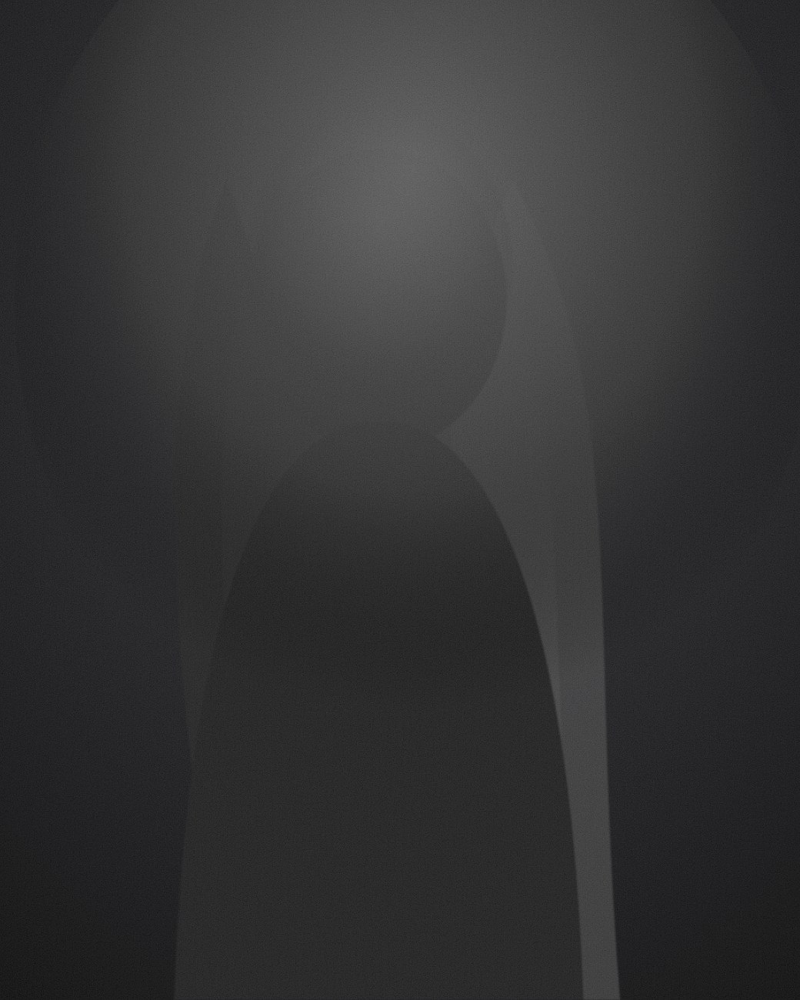
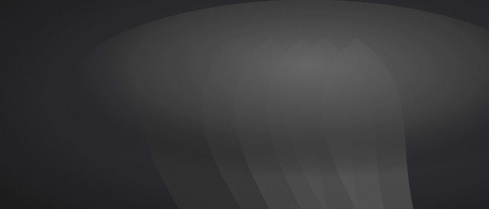
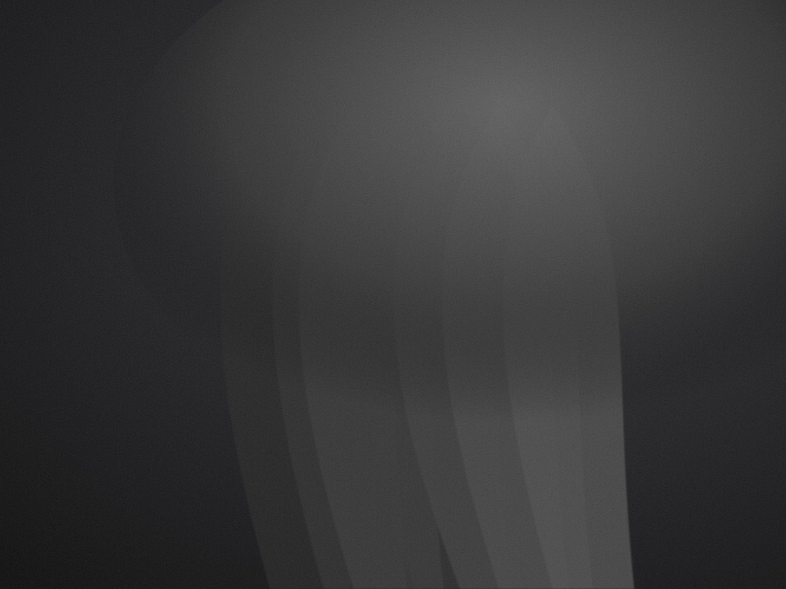
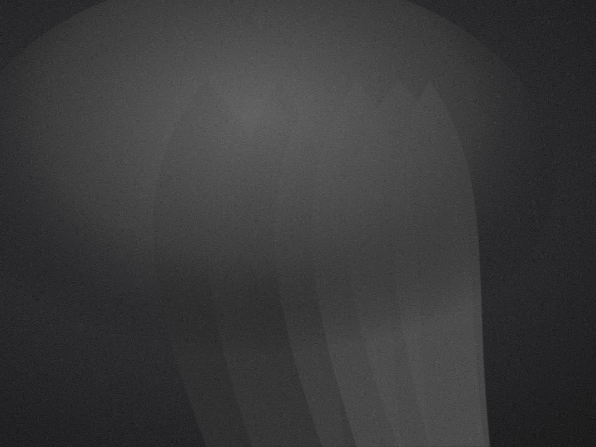

An editorial study of light, silhouette and restraint — garments photographed as objects of quiet permanence.
Midnight is a studio for fashion houses that treat clothing as architecture. We compose campaigns where negative space carries as much weight as the subject, and where a single source of light does the talking.
Explore the work →
Every frame is graded toward a near-monochrome palette — high contrast, muted skin, deep black. The result reads less like advertising and more like a page torn from an art quarterly.
Read the journal →
